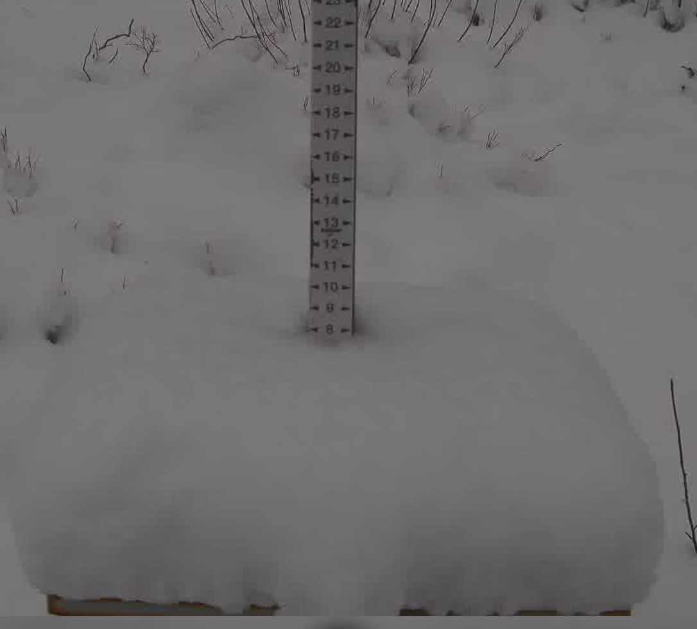
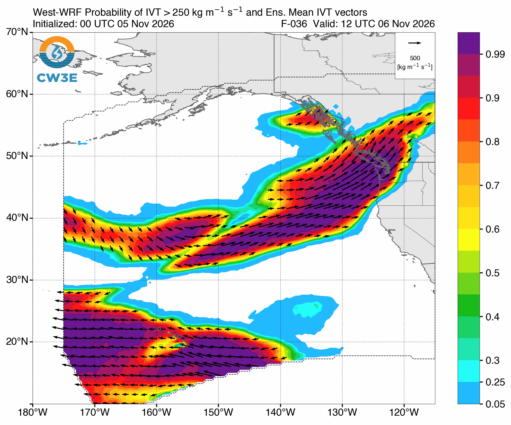
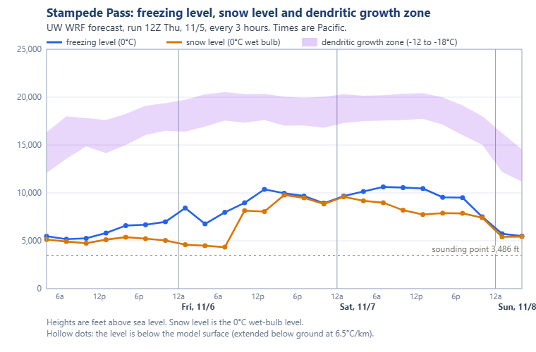
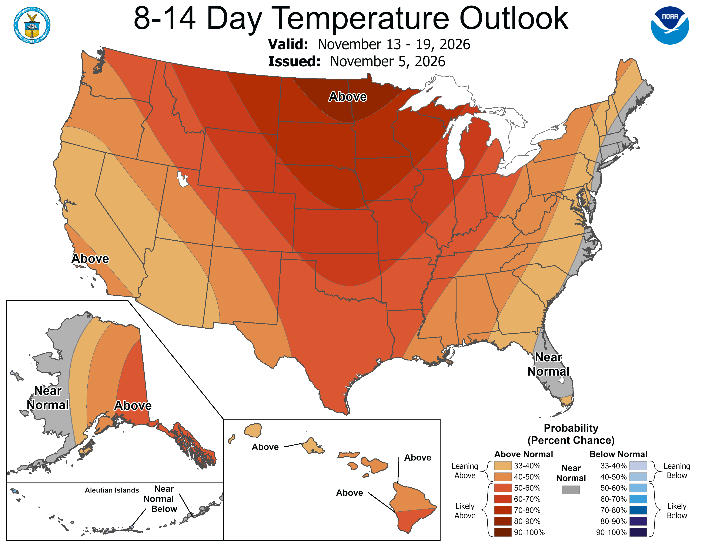
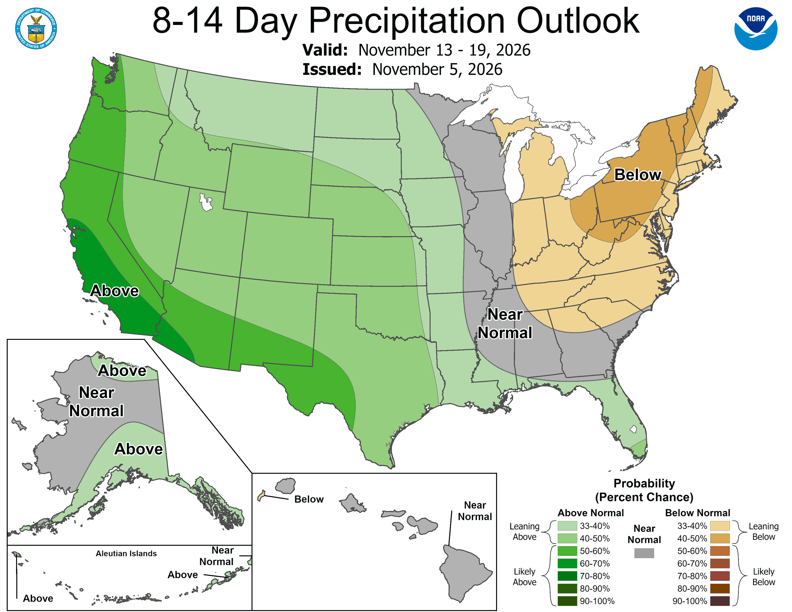

Welcome back to the CMW weekend forecast! We're stoked to have you. This weekend two back-to-back atmospheric rivers will impact western Washington starting early Friday. But a window of opportunity for some outdoor adventure still exists mid-day Saturday.
🛍️ New season, new gear! Check out the CMW merch store.
Last weekend's lovely fresh coating of early season snow will soon be a distant memory. As the closed low that brought the bundle of cold air descended south, a transient ridge developed overhead, giving us some nice fall days early in the week. A weak system spun through Wednesday as Gulf of Alaska troughing began to heat up.

🧰 Related tools: Live conditions mapSatellite loopForecast evaluation
A strong atmospheric river is approaching from the southwest as of Thursday evening, accompanied by strong winds and high amounts of IVT (integrated vapor transport). IVT is a measure of the amount of water vapor in the atmosphere that is "flowing". You could think of it like the flow rate of a river.

🧰 Related tools: Synoptic-scale toolsSatellite loopSkew-T / soundings
Precipitation with our first AR begins Thursday evening as a deep low slams into Northern BC. Friday will be very wet and mild with freezing levels increasing over the day. Precipitation from this first storm should taper off early Saturday, as the next storm intensifies over the Pacific. This one is not as strong and will usher in cooler air behind it as the center of this storm is much further south. For both these storms, northern regions are favored for higher totals.
Freezing levels rise through Friday and Saturday before beginning to drop Saturday night.

Strong winds are expected during Friday's early afternoon frontal passage. Winds will likely be higher further north.
The timing of the most intense precipitation is still uncertain, but expect mid-afternoon Friday to bring the brunt of the storm.
🧰 Related tools: PrecipitationFreezing & snow levelLowland snowSkew-T / soundings
Click a location on the map (or its name below it) to see that site's snowfall and liquid precipitation plumes and its snow table. Sites are colored by their weekend total.
NBM 18Z, HRRR 18Z, RRFS 18Z, HRDPS 18Z Thu 5 Nov.
🧰 Related tools: Precipitation toolsFreezing & snow levelSki model meteograms
I'm classifying a winner this weekend as a place where a good dry window appears. But mud will be plentiful :).
Best bet this weekend: Hiking/biking/running around mid-day on Saturday at low-mid elevations. But don't hate me if you get wet. You can't hit a home run if you don't take a swing!
The atmospheric river train and Gulf of Alaska troughing continue as several more mild storms work our way. There is some model disagreement, with the Euro being more aggressive with the impact these storms would have for us.
🧰 Related tools: Synoptic-scale toolsPrecipitation toolsFreezing & snow level
It looks like a mildly warm and wet pattern will continue for the foreseeable future. Both the ECMWF and CPC outlooks agree on slightly warmer temperatures and greater than normal precipitation over the next 2 weeks. Read that as: rain at most mountain locations. But hey, it's only November, right? (famous last words)


🧰 Related tools: Sub-seasonalSeasonalTeleconnectionsTea Leaves